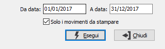

Controllo libro giornale
L’eventuale assenza dell’anagrafica di un sottoconto contabile presente in una o più scritture contabili è causa di anomalie nei programmi di elaborazione e stampa dei bilanci. Per quanto OS1 non consenta normalmente, dai programmi accessibili agli operatori, la cancellazione di un sottoconto, di un cliente o di un fornitore già utilizzato in contabilità. Può tuttavia verificarsi che un malfunzionamento hardware deteriori una anagrafica esistente oppure importi relativi a singole transazioni. Questo programma di controllo produce un tabulato in cui viene evidenziato il codice del conto assente dall’anagrafica e i numeri e le sezione dei movimenti contabile che lo contengono.
Richiamato il programma appare la seguente maschera video:

Dopo l’inserimento delle date di stampa, il programma elabora la stampa. Se non viene stampato nulla, non esistono scritture contabili con conti privi di anagrafica. In caso contrario, conservare il tabulato e contattare il Servizio di assistenza software.
Questo programma di controllo deve essere eseguito, oltre che prima della stampa del libro giornale, anche nel caso in cui la stampa dei bilanci segnali una differenza fra lo sbilancio dei conti patrimoniali e quello dei conti di reddito. Ciò potrebbe essere causato dalla accidentale cancellazione di un rigo di un movimento contabile.